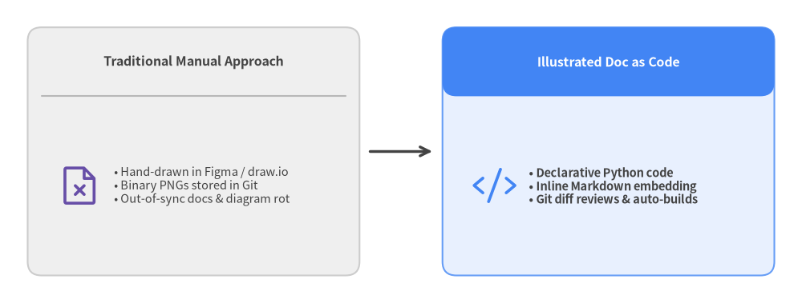
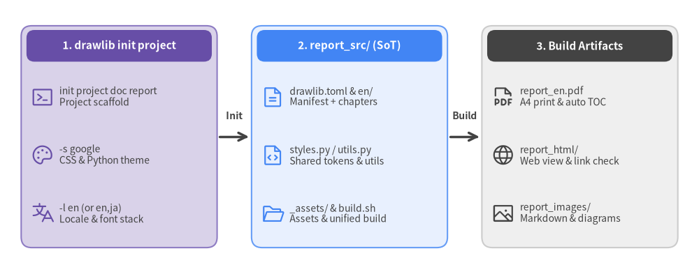
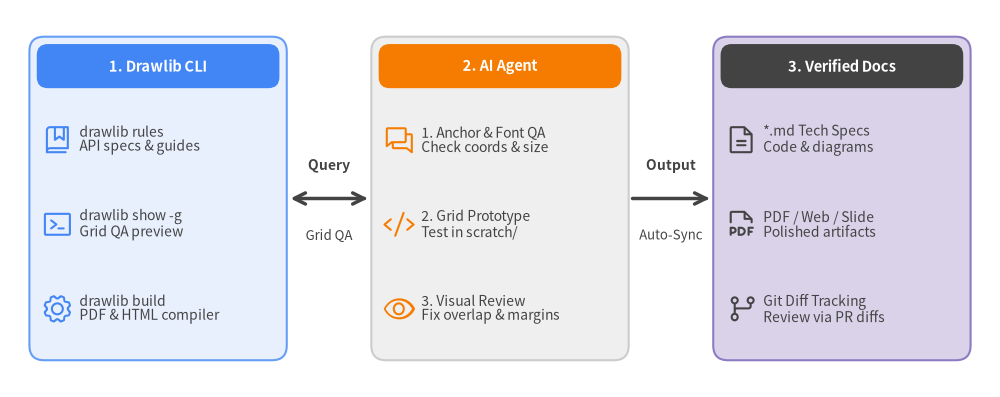
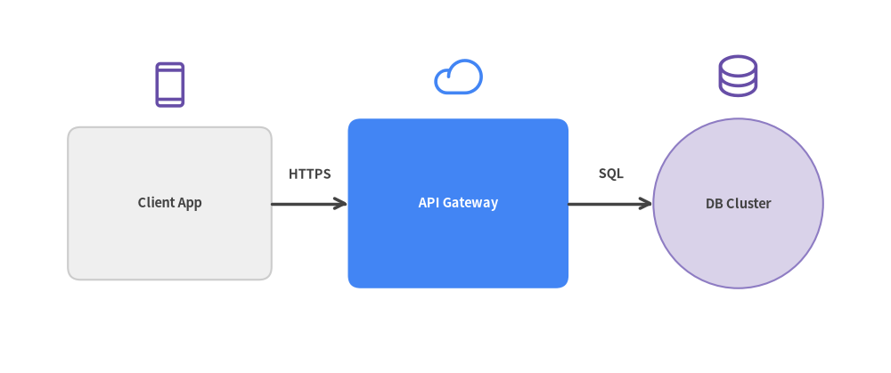
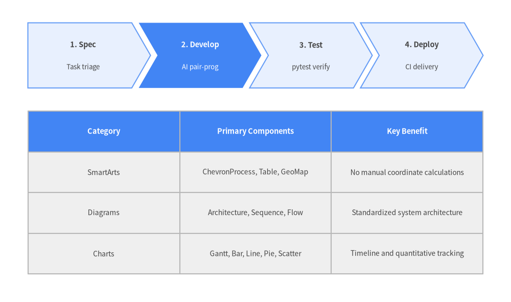
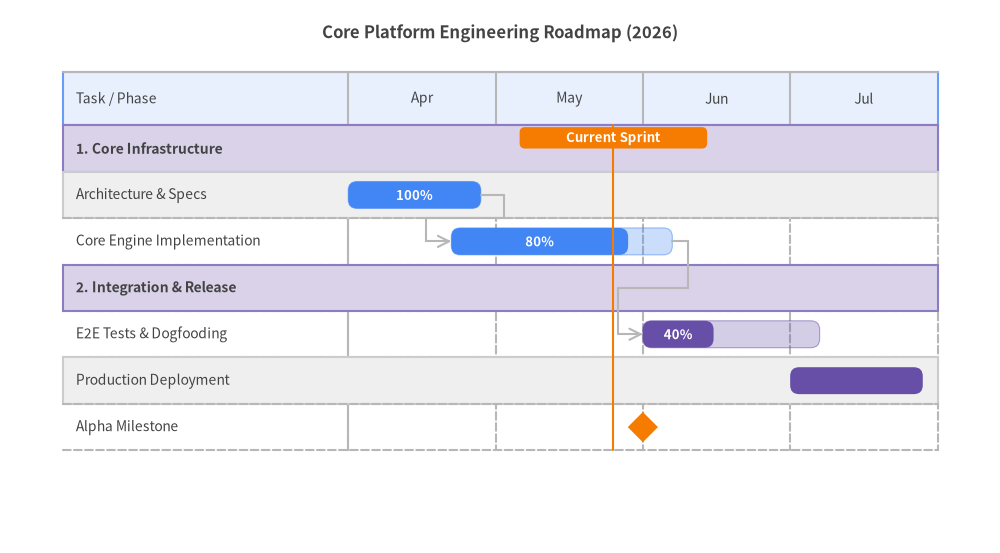
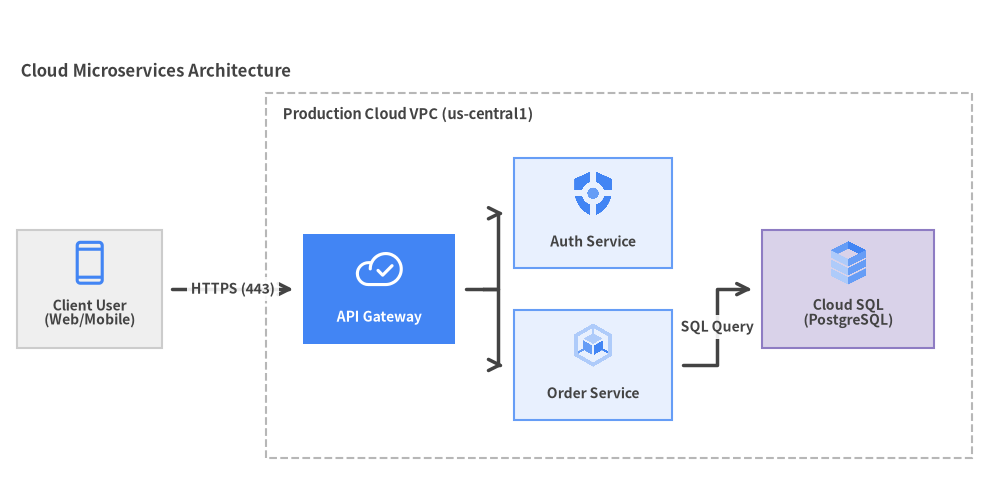
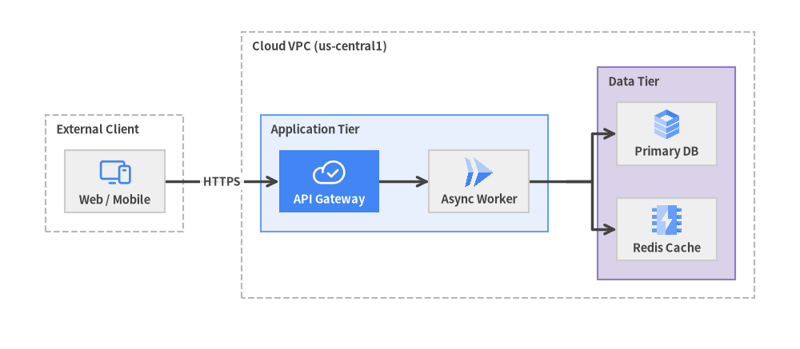
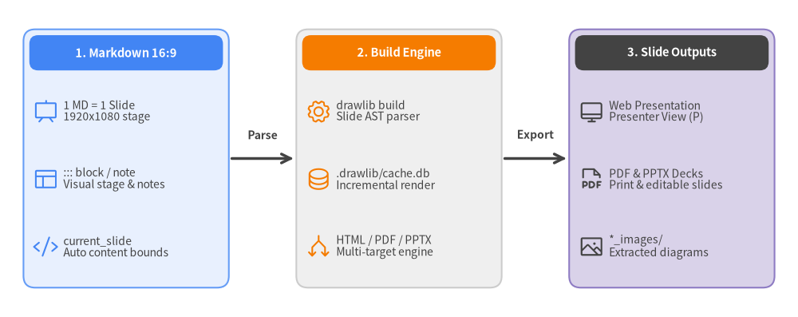

Automated Documentation with Drawlib & AI
Illustrated Documentation as Code in the AI Era

Author: Drawlib Core Team
Audience: Software Engineers, Architects, and AI Pair Programmers
Version: 0.3.4
Date: November 2026
Chapter 1: Diagramming & Documentation Challenges in AI Development
As AI-assisted coding and pair programming become standard practice, the primary bottleneck in software engineering has shifted from writing implementation code to visualizing system architecture and keeping documentation synchronized.
1.1 The Gap Between Design Docs and Implementation (Documentation Rot)
With AI coding agents (Claude Code, Cursor, Gemini CLI, GitHub Copilot, etc.), source code is refactored and expanded at unprecedented speed. However, system architecture diagrams, sequence diagrams, and database schema diagrams are frequently left behind.
This disconnect leads to chronic engineering problems:
- Stale Documentation: Engineers can no longer tell whether the documentation or the current codebase represents the truth.
- Slower Onboarding: New team members and fresh AI agent sessions cannot quickly grasp the system's macro architecture.
- Siloed Tribal Knowledge: Up-to-date design intent remains buried in commit logs and ephemeral chat transcripts.
1.2 Limitations of Manual GUI Drawing Tools
Traditionally, engineers have relied on manual GUI tools to create diagrams:
- draw.io / diagrams.net
- Figma / Miro
- PowerPoint / Google Slides
Diagrams produced in these tools are typically exported and committed to repositories as binary images (PNG or JPEG). Managing binary assets introduces three fundamental flaws:
- Unreviewable in Git Diffs: Pull requests cannot track logical or structural changes inside a binary image.
- Inaccessible to AI Agents: AI coding agents cannot directly edit the internals of a binary PNG. Updating a single box requires a human to open an external GUI tool, rearrange shapes manually, and re-export the file.
- Inconsistent Visual Design: Fonts, color palettes, stroke weights, and margins vary wildly across authors, eroding documentation quality across the organization.
1.3 Why Raw SVG and Matplotlib Fail for AI Agents
Can we simply ask an AI to generate diagrams as code using existing formats? In practice, having AI generate raw SVG or Matplotlib code quickly breaks down:
- Raw SVG Generation:
- Computing text wrapping and multilingual (CJK/Latin) font metrics is difficult, causing labels to overflow or clip against box borders.
- Calculating arrow coordinates and connector routing manually leads to crossed lines and misaligned arrowheads.
- Hundreds of low-level
<path>and<rect>elements make the resulting files impossible for humans to review or maintain.
- Repurposing Matplotlib:
- Designed for statistical plots rather than system design, Matplotlib lacks high-level primitives for architecture nodes, container groups, connector routing, vector icons, and graph auto-layout.
- Verbose boilerplate code increases token consumption and frequently causes AI coordinate or syntax errors.
These challenges motivated the creation of Drawlib—a pure-Python library built for "Illustration as Code" and "Illustrated Documentation as Code".
Chapter 2: The Solution: Illustrated Documentation as Code
Drawlib delivers "Illustrated Documentation as Code" (IDaC) for software engineers and AI coding agents. While traditional Documentation-as-Code focused solely on text, Drawlib elevates architectural diagrams, system designs, and workflows into first-class, version-controlled code.
2.1 Core Principles of Illustrated Documentation as Code
Drawlib is built on four pillars:
- Declarative Python Scripts: Define architecture diagrams, flowcharts, quantitative charts, and structured SmartArts using intuitive, high-level Python APIs.
- Inline Markdown Embedding: Embed drawing code directly inside your Markdown documents via
drawlibcode fences. - Full Version Control & Git Diffs: Diagram definitions live as plain text in Git, enabling line-by-line diff reviews in pull requests.
- Multi-Format Compilation & Incremental Caching: A single CLI build (
drawlib build) compiles your source into multi-page HTML sites (site), A4 vector PDFs and linear HTML reports (doc), 16:9 widescreen HTML/PDF slide decks (slide), and GitHub-flavored Markdown—accelerated by a SQLite incremental build cache (.drawlib/cache.db) that only re-renders modified diagrams.
2.2 Traditional Approach vs. Drawlib

2.3 Synergy with AI Pair Programming
Expressing diagrams as executable code transforms collaboration with AI coding agents (Claude Code, Cursor, Gemini CLI, GitHub Copilot, etc.):
- Spec-Driven Generation: When you implement a new microservice or data model, simply prompt your AI agent to update the architecture diagram, and it generates the corresponding Python block directly.
- Multimodal Visual Verification: AI agents render diagrams with a coordinate grid (
drawlib show -g), visually inspect the output image, and self-correct overlapping labels or routing defects before delivering the result. - 100% Deterministic Reproducibility: The same Python code renders pixel-identical diagrams across every machine and CI/CD environment.
Chapter 3: Drawlib Architecture and Capabilities
Drawlib is an integrated platform for Illustrated Documentation as Code. In addition to its document compilation pipeline, it provides a 6-layer architecture spanning geometric primitives, system topology design, and presentation/animation generation.
3.1 Drawing & Documentation Component Layers
| Layer | Primary Modules | Description & Use Cases |
|---|---|---|
| 1. Primitives | drawlib.shapes, lines, text, icons, images |
43 geometric shapes, polyline/curved/block arrows, rich typography, and Phosphor / FontAwesome / official GCP icons |
| 2. SmartArts | drawlib.smartarts |
Process chevrons, data tables (Table), offline world & Japan maps (GeoMap), syntax-highlighted code cards (SourceCode), mindmaps (MindMapNode), hierarchy trees (TreeNode), cycles (Cycle), pyramids, and grids |
| 3. Charts | drawlib.charts |
Gantt schedules, bar charts, line & area charts, pie & donut charts, radar charts, and scatter/bubble plots (with shared axes, log scale, and legends) |
| 4. Diagrams & Graphs | drawlib.diagrams, drawlib.graph |
Cloud architectures, flowcharts, sequence diagrams, ER diagrams, UML class diagrams, state machines, and 5 pure-Python auto-layout solvers (get_layout()) |
| 5. Presentation & Animation | drawlib.slide, drawlib.anim |
16:9 presentation stages (::: block / ::: note, Presenter View), multi-frame APNG & Animated WebP generation |
| 6. Builder, CLI & Tools | drawlib.tools (CLI: drawlib) |
Multi-target HTML / PDF / Slide / Markdown / Image compilation, SQLite incremental build cache (.drawlib/cache.db), asset cache management (drawlib cache), and local verification server (drawlib serve --check) |
3.2 Unified Design System and Semantic Colors
With Drawlib, you never need to guess raw RGB values. It provides a cohesive 6-role semantic color palette, neutral baseline tokens, and consistent naming conventions out of the box:
Styles.Neutral/Styles.PrimaryNeutral/Styles.SecondaryNeutral: Calm neutral cards that form the structural foundation of diagrams (soft gray, blue-gray, and slate tones)Styles.Primary: Core system nodes and primary paths (Blue)Styles.Secondary: External systems, clients, and actors (Slate / Indigo)Styles.Accent: Highlighted services and focal callouts (Amber / Teal)Styles.Muted: Boundary containers, structural grids, and subtle annotations (Light Gray)Styles.Success/Styles.Danger: Healthy statuses (Green) and warnings, alerts, or error paths (Red)
Every color role includes standardized PascalCase design tokens such as PrimaryFlat (solid fill), PrimaryOutline (bordered), PrimaryBold (thick stroke), and PrimaryDashed (dashed border).
The 50%+ Neutral Baseline Rule (Preventing Rainbow Diagrams)
Assigning saturated fills (PrimaryFlat, AccentFlat, SuccessFlat, etc.) to every box creates visually noisy "rainbow diagrams" where nothing stands out. To establish clear visual hierarchy, Drawlib enforces two core color principles:
- Ground 50%+ of Nodes in Neutral Cards: Use
Styles.Neutral,Styles.PrimaryNeutral, andStyles.SecondaryNeutralfor at least 50% of nodes to create a calm, readable structural baseline. - Reserve Saturated Fills for 1–2 Focal Points: Use high-saturation fills like
Styles.PrimaryFlatorStyles.AccentFlatstrictly for 1–2 primary focal elements per diagram.
Principles of Neutral Typography and Connectors
To maintain high contrast and clean readability across all diagrams:
- Neutral Typography: On light backgrounds and neutral cards, text defaults to
Styles.DarkorStyles.DarkBold. Inside dark-filled shapes (PrimaryFlat), useStyles.WhiteBoldorStyles.Light. Avoid coloring text (Primary,Secondary) without explicit semantic intent. - Neutral Connectors: Standard workflow transitions and connectors should use
Styles.DarkBold. Reserve colored arrows (Styles.Primary,Styles.Danger) for critical paths or error rollback loops that require deliberate emphasis.
3.3 Multilingual Typography and Full CJK Support
Drawlib provides first-class multilingual and CJK (Japanese, Chinese, Korean) typography out of the box. Initializing a project with --lang ja (or other language flags) automatically configures:
- HTML / PDF Output: Curated web and system font stacks (e.g., Inter, Roboto, Noto Sans JP, Hiragino Sans).
- Canvas Rendering: Automatic configuration of bundled open-source fonts (such as
drawlib.fonts.FontJapanese) to prevent missing glyphs, tofu boxes, or cross-platform layout shifts.
Chapter 4: Installation and Environment Setup
Drawlib (v0.3.4) is published on the official Python Package Index (PyPI) and can be installed in seconds using uv or pip.
4.1 Prerequisites
- Python: 3.11 or higher (supports Python 3.11, 3.12, and 3.13)
- Operating Systems: Linux, macOS, and Windows
- Package Manager:
uv(recommended) orpip
4.2 Installing from PyPI (uv / pip / uvx)
A standard drawlib installation includes every output target out of the box—standalone diagrams, multi-page HTML sites, 16:9 HTML slide decks, GitHub Markdown, vector PDF (drawlib build pdf), editable MS Word (drawlib build docx), and editable 16:9 MS PowerPoint (drawlib build pptx)—with no optional package extras required:
# Using uv (recommended)
uv add drawlib
uv run drawlib --version
# Run ephemerally without adding to a project (uvx)
uvx drawlib --version
uvx drawlib init project site
# Using pip
pip install drawlib
4.3 Built-in PDF & Office (Word / PowerPoint) Export
Drawlib handles document and presentation compilation without manual browser installation steps:
- Vector PDF & 16:9 PowerPoint (
drawlib build pdf,drawlib build pptx): On the firstdrawlib build pdfordrawlib build pptxexecution, Drawlib automatically downloads and caches a managed headless Chromium binary via Playwright—no manual browser setup is needed. - Editable MS Word (
drawlib build docx): Runs in pure Python (python-docx) without requiring a browser, compilingdocprojects directly into editable.docxdocuments (including--generate-indexTable of Contents support).
Note (Minimal Linux Docker Containers):
On minimal Ubuntu or Debian container images where OS shared libraries required by Chromium are not pre-installed, install system dependencies once via:
uv run playwright install-deps chromium
4.4 Managing Asset & Build Caches (drawlib cache)
To keep the core PyPI package lightweight and builds fast, Drawlib uses a two-tier caching architecture:
- External Asset & Headless Browser Cache:
Multilingual fonts (Roboto, Noto Sans JP, etc.), vector icon packs (Phosphor, FontAwesome, official GCP icons), offline map geometry (
GeoMap), and the headless Chromium browser for PDF / PPTX builds are automatically downloaded on demand upon first use and cached locally. - Incremental Build Cache (
.drawlib/cache.db): Duringdrawlib buildanddrawlib show, Drawlib hashes each code block along withstyles.py,utils.py, and referenced local assets in a SQLite database, skipping unchanged diagrams to make incremental rebuilds near-instantaneous.
Use the drawlib cache CLI to pre-download assets and headless Chromium for offline/air-gapped CI environments or clear cached artifacts:
# Inspect cached asset packages and status
uv run drawlib cache list
# Pre-download all assets (fonts, icons, maps, and headless Chromium) for offline or CI builds
uv run drawlib cache download --all
# Or download specific categories: --fonts / --icons / --maps / --browser
# Clear only the incremental image build cache (.drawlib/cache.db) to force re-rendering
uv run drawlib cache clear --images
# Clear both downloaded assets and the incremental build cache
uv run drawlib cache clear --all
4.5 Verifying the Installation
Once installed, verify that the CLI and project templates are available:
# Check installed version (0.3.4)
uv run drawlib --version
# List available project templates
uv run drawlib init project list
When the four project archetypes—doc, site, slide, and images—are displayed, your environment is ready.
Chapter 5: Project Scaffolding and Build Workflows
Drawlib provides the drawlib init project command to scaffold purpose-built documentation projects in seconds.
5.1 Project Template Types
| Template | Use Case | Primary Artifacts |
|---|---|---|
doc |
Multi-chapter technical specs, engineering RFCs, and formal reports | <target>_<lang>.pdf, <target>_<lang>.docx, <target>_html/, <target>_markdown/, <target>_images/ |
site |
Multi-page documentation website with sidebar navigation | <target>_html/, <target>_markdown/, <target>_images/ |
slide |
16:9 presentation slide deck (web, PDF & PowerPoint) | <target>_html/<lang>/index.html, <target>_<lang>.pdf, <target>_<lang>.pptx, <target>_images/ |
images |
Standalone Python drawing scripts | <target>_images/*.png (or <target>/*.png, *.webp) |
5.2 Creating a Google-Style Document Project
Create a Google-style document project in one command (pass -l en,ja to scaffold multiple locales at once):
uv run drawlib init project doc report -l en -s google

Automatic Path Resolution via Target Argument
Specifying drawlib init project doc report establishes a synchronized, i18n-native pipeline:
- Source Directory: Creates
report_src/withdrawlib.toml([project]+[i18n]) and locale folderreport_src/en/(oren/,ja/when-l en,jais passed). - Build Output: Configures
report_en.pdf(report_<lang>.pdf),report_html/,report_markdown/, andreport_images/as output targets (plus optionalreport_<lang>.docxviadrawlib build docx).
5.3 Directory Structure and Incremental Build Cache
The scaffolded report_src/ folder contains:
report_src/
├── drawlib.toml # Project manifest ([project] type/style + [i18n] langs)
├── _assets/ # Static assets directory (logos, external images)
├── en/ # Locale chapter directory (add ja/, etc. for multi-locale)
│ ├── 00_cover.md # [Required] Title page and metadata
│ ├── 01_overview.md # Chapter 1 content
│ └── 02_design.md # Chapter 2 content
├── style.css # PDF / HTML stylesheet (Google Theme)
├── styles.py # Drawing style definitions (GoogleStyles; optional <lang>/styles.py)
├── template.html # Jinja2 print and web layout template
├── utils.py # Shared drawing helpers and constants
├── build.sh # [Executable] Master build script for all targets
├── serve.sh # Local preview server startup script
└── README.md # Project guide
During compilation, Drawlib validates structural parity across all locales listed in drawlib.toml, shares language-neutral diagrams across locales, and maintains a SHA-256 incremental build cache in .drawlib/cache.db (SQLite) at the workspace root. By hashing each drawlib code block alongside styles.py, utils.py, and any referenced files in _assets/, unchanged diagrams are served instantly from cache on subsequent builds.
5.4 Building and Verifying Link Integrity
To compile your Markdown sources into PDF, HTML, Markdown, and standalone images, run the generated build.sh and verify link integrity with drawlib serve --check:
# Execute master build script (HTML, PDF, Markdown, Images)
./report_src/build.sh
# Automatically verify zero broken internal links or missing images
uv run drawlib serve report_html/ --check
When compilation finishes, report_en.pdf (report_<lang>.pdf), report_html/, report_markdown/, and report_images/ are ready for distribution, and drawlib serve --check confirms that all links and image references are intact.
Chapter 6: AI Agent Integration and Prompting
Drawlib is engineered from the ground up to be "Agent-First", enabling AI coding assistants (Claude, Cursor, Gemini, Copilot) to generate accurate, publication-ready diagrams autonomously. Once basic instructions are registered, the AI interacts with the Drawlib CLI to inspect rules, test drawings, and output verified code.

6.1 Using the Built-In Rule System (drawlib rules)
Drawlib embeds comprehensive API specifications and best practices directly in its CLI. Agents can consult rules on demand:
# List all available rule manuals
uv run drawlib rules list
# Read core agent workflow instructions
uv run drawlib rules show agent-instruction
# Check canvas coordinate system (bottom-left origin) and lifecycle rules
uv run drawlib rules show overview
# Check color tokens, typography, and the 50%+ neutral baseline rule
uv run drawlib rules show style-guide
# Check the 3-stage multimodal review loop and 720pt font sizing math
uv run drawlib rules show review-guide
# Check project archetype guides (doc / site / slide / images)
uv run drawlib rules show project-overview
uv run drawlib rules show project-doc
uv run drawlib rules show project-site
uv run drawlib rules show project-slide
uv run drawlib rules show project-images
# Check complete API index and specific domain module specifications
uv run drawlib rules show api
uv run drawlib rules show lib-smartarts-overview
uv run drawlib rules show lib-diagrams-overview
uv run drawlib rules show lib-graph-overview
uv run drawlib rules show lib-charts-overview
6.2 Setting Project Rule Files (drawlib init agent)
Generate native workspace instruction files automatically via uv run drawlib init agent <claude|cursor|antigravity|copilot|windsurf|cline|roo|codex|gemini|all>, or register these essential rules so agents follow Drawlib principles automatically:
# Drawlib Drawing Rules
- Project-First Rule: Never create bare `.py` files in an uninitialized folder; always scaffold a project first via `uv run drawlib init project <doc|site|slide|images>`.
- Do NOT generate raw SVG or low-level matplotlib code; always use high-level modules (smartarts, diagrams, graph, charts).
- The canvas origin (0, 0) is at the bottom-left corner.
- Design tokens must be imported and referenced in PascalCase: `Styles` and `Colors`.
- 50%+ Neutral Baseline: Ground at least 50% of shapes in calm neutral cards (`Styles.Neutral`, `Styles.PrimaryNeutral`, `Styles.SecondaryNeutral`), reserving saturated fills (`Styles.PrimaryFlat`, `Styles.AccentFlat`) strictly for 1–2 primary focal points or headers.
- Maintain `text_size >= 10.0` (standard 10.0–11.5, headers 11.5–12.5).
- Embedded code blocks must specify `file=<name>.png` and `caption="..."` (plus optional `code=fold` / `code=show`) using `=` syntax, without narrow pixel width caps (`width=600px`).
6.3 The Autonomous 3-Stage Review Loop
Instruct your AI agent to execute this Autonomous 3-Stage Review Loop when creating illustrations and documentation:
- Stage 1 — Static & Coordinate Anchor Check:
- Verify coordinate anchors: primitives (
shapes,text,icons) use Center(cx, cy), whereas high-level components (SmartArts,Charts,Diagrams) use Bottom-Left(x0, y0). - Ensure compact canvas dimensions (
width=120..136),text_size >= 10.0, and an explicitsave()call.
- Verify coordinate anchors: primitives (
- Stage 2 — Micro-Geometry Grid Review (
drawlib show -g):uv run drawlib show doc.md arch.png -s styles.py -u utils.py -g -o .drawlib/scratch/arch_grid.png- Export the diagram with the 10-unit/5-unit coordinate grid overlay and inspect the image multimodally to fix any text clipping, arrow overlaps, tight margins (
>= 4–6units), or 50%+ neutral balance issues in one shot.
- Export the diagram with the 10-unit/5-unit coordinate grid overlay and inspect the image multimodally to fix any text clipping, arrow overlaps, tight margins (
- Stage 3 — Macro-Page Browser HTML / PDF Review:
./build.sh uv run drawlib serve report_html/ --check- Run the project build, verify zero broken links or missing images via
drawlib serve <html_dir> --check, and inspect the rendered HTML/PDF page to confirm visual harmony between prose and diagrams.
- Run the project build, verify zero broken links or missing images via
Chapter 7: Drawing Primitives
Drawlib's primitive drawing layers (shapes, lines, text, icons) give you the power to construct custom geometric layouts and specialized diagrams.
7.1 Canvas Coordinate System & Anchor Rules
Drawlib uses a standard Cartesian coordinate space:
- Origin
(0, 0): Located at the bottom-left corner of the canvas (unlike top-left screen coordinates). - Canvas Dimensions: Defined explicitly using
setup(width=W, height=H), and finalized by callingsave(). - Center Coordinate Anchor
(cx, cy): All primitive drawing elements (shapes,text,icons,images) are anchored by their center coordinate(cx, cy)(in contrast to high-level modulessmartarts,charts, anddiagrams, which anchor at the bottom-left(x0, y0)).
7.2 Shapes, Lines, and Vector Icons
43 shape primitives (rectangle, circle, ellipse, polygon, star, donuts, fan, bubblespeech, cylinder, parallelogram, trapezoid, chevron, and block arrows arrow_polyline, arrow_l, arrow_u, arrow_arc, etc.) are built-in:

7.3 Essential Drawing Functions
rectangle(xy, width, height, style=...): Rectangle (supports rounded corners viastyle.shape_r).circle(xy, radius, style=...): Circle.line(start_xy, end_xy, arrow_head="->", style=...): Straight line with arrowheads.line_curved(start_xy, end_xy, bend=0.2, ...): Smooth bezier curves.text(xy, text="...", style=...): Styled typography.phosphor.<icon_name>(xy, width, style=...): Phosphor vector icons (drawlib.icons.phosphor).fontawesome.<icon_name>(xy, width, style=...): FontAwesome icons (drawlib.icons.fontawesome).gcp.<icon_name>(xy, width, ...): Official Google Cloud architecture icons (drawlib.icons.gcp).
Chapter 8: SmartArts (Structured Infographics)
drawlib.smartarts automatically arranges structured visual infographics without requiring manual coordinate math for individual shapes. SmartArt components position their bounding box using the bottom-left coordinate (x0, y0) in .draw(xy=...) (Table supports align="bottom_left" or the default align="top_left").
8.1 Available SmartArt Components
ChevronProcess: Sequential arrow blocks for deployment pipelines and development phases.Table: Structured comparison matrices with header styling and custom borders.GeoMap: Offline vector maps for the world, regions, and Japan prefectures with country/prefecture highlights, pin markers, and inter-site connection arcs.MindMapNode: Radial and branching idea maps.TreeNode: Hierarchical organization charts and directory trees.Cycle: Continuous feedback loops and lifecycle workflows.Pyramid: Testing pyramids, security tier models, and priority hierarchies.BoxList/BulletPoints: Organized card stacks and bulleted summaries.GridLayout: Matrix-based dashboard layouts.SourceCode: Syntax-highlighted code blocks with line numbering.
[!NOTE] For pointing speech bubbles and callout annotations, use
bubblespeechfromdrawlib.shapes.
8.2 Release Pipeline and Feature Matrix Example

Chapter 9: Quantitative Charts
drawlib.charts renders engineering roadmaps, project timelines, and metric visualizations with publication quality. Every chart anchors its bounding container at the bottom-left coordinate (x0, y0) via .draw(xy=...).
9.1 Gantt Charts (GanttChart)
Visualize sprint schedules, milestones, and task dependencies with automated arrow routing:

9.2 Additional Chart Types
BarChart: Vertical and horizontal bar plots with grouping (bar_mode="group"), stacking (bar_mode="stack"), outer corner rounding (bar_r), and logarithmic axes (Axis(scale="log")).LineChart/AreaChart: Continuous trend plots and multi-series tracking with smooth spline interpolation (smooth=True) and overlapping or stacked area volumes.PieChart: Proportional sector compositions supporting donut rings (hole_ratio), center KPI badges (center_text), and exploded slice callouts (explode).RadarChart: Multivariate capability and architecture trade-off matrices (polygon and circular grid contours).ScatterChart: 2D coordinate scatter plots and 3-variable bubble charts ((x, y, radius)) with logarithmic axis scaling (Axis(scale="log")) for latency and throughput correlation analysis.
Chapter 10: Technical Diagrams (Architecture & System Design)
drawlib.diagrams is the top-level module for rendering distributed architectures, microservices, and network topologies using engineering-standard notations.
10.1 Cloud Architecture Diagrams (ArchitectureDiagram)
Easily define boundary groups (NodeGroup), cloud service nodes (Node), and orthogonal routing connections:

10.2 Auto-Layout Graph Engine (drawlib.graph)
When drafting complex architectures or data workflows from scratch, calculating pixel coordinates (x, y) for every node and boundary can strain cognitive working memory for both engineers and AI agents—a challenge known as the Cold-Start Problem.
Drawlib's drawlib.graph is a Pure-Python coordinate and layout calculator (get_layout()) with zero external binary dependencies (no Graphviz required). Rather than coupling layout calculation to a rigid renderer, it powers a clean 2-Step Workflow: solve coordinates in Step 1 (layout = g.get_layout()), then render with drawlib.diagrams or drawlib.shapes in Step 2:

The 2-Step Workflow (get_layout() & print(layout))
- Step 1 — Solve & Inspect (
layout = g.get_layout()): Computes node centers (.xy,.local_xy), cluster bounds (.bottom_left,.local_bottom_left,.size), and edge waypoints (.points). Callprint(layout)to inspect the coordinate table for manual scripts, or calllayout.offset("api", dy=-4.0)to fine-tune positions. - Step 2 — Render with Rich Components (
drawlib.diagrams/drawlib.shapes): Pass the solved coordinates intoArchitectureDiagram,FlowDiagram, ordrawlib.shapes/drawlib.linesfor full control over icons, styles, and connectors.
5 Specialized Layout Solvers
ArchitectureGraph: Multi-tier architecture, VPC/subnet boundary nesting, and 5-zone compass positioning (left,right,top,bottom,center).LayerGraph: Sugiyama-style hierarchical DAGs for pipelines, dataflows, and dependency graphs (.tier()).TreeGraph: Reingold-Tilford symmetrical tree layout for org charts, taxonomies, and ASTs (.child()).RadialGraph: Concentric ring layouts for hub-and-spoke and event-driven architectures (.spoke(),layout.ring_radii).GridGraph: 2D matrix grids with orthogonal channel routing for service catalogs (.cell(),.cluster_row()).
10.3 Other Domain Diagrams
FlowDiagram: ISO-compliant flowcharts with decision diamonds and swimlanes.SequenceDiagram: Lifelines, synchronous/async messages, andwith d.loop()condition frames.ERDiagram: Relational schemas with PK/FK indicators and Crow's Foot cardinalities.ClassDiagram: Object-oriented UML class diagrams with inheritance and composition.StateDiagram: Finite state machines with transition triggers and activity compartments.
Chapter 11: Style and Theme Customization
Drawlib provides complete control over document typography, color schemes, and visual styles.
11.1 Controlling Visual Themes via styles.py
In your project root or source directory, styles.py defines the active Colors and Styles namespaces:
from drawlib.fonts import Font
from drawlib.preset_colors import GoogleColors
from drawlib.preset_styles import GoogleStyles
# Initialize color palette and style presets
Colors = GoogleColors()
Styles = GoogleStyles().patch_font(
regular=Font.SANSSERIF_REGULAR,
bold=Font.SANSSERIF_BOLD,
thin=Font.SANSSERIF_THIN,
)
11.2 Available Style Presets and Neutral Card Tokens
Drawlib provides three global theme presets:
DefaultStyles/DefaultColors: Modern developer theme inspired by Tailwind and VitePress.GoogleStyles/GoogleColors: Clean editorial theme inspired by Material Design and Google Docs.MonochromeStyles/MonochromeColors: Grayscale theme optimized for black-and-white printing.
Across all theme presets, Drawlib includes built-in neutral card tokens to support the 50%+ Neutral Baseline Rule (grounding at least 50% of diagram shapes in calm neutral fills rather than creating noisy rainbow diagrams):
Styles.Neutral: Clean white/light-gray card surface for standard nodes and containers.Styles.PrimaryNeutral: Soft primary-tinted background with a subtle border for primary subsystems.Styles.SecondaryNeutral: Soft secondary-tinted background with a subtle border for supporting components.Styles.PrimaryFlat/Styles.AccentFlat/Styles.DarkFlat: High-contrast saturated fills reserved strictly for 1–2 primary focal points or container header bars.
11.3 Deriving Custom Styles (.patch()) and Sharing utils.py Helpers
Derive custom styles from existing presets by overriding specific attributes with .patch(). Furthermore, any constants or helper functions defined in your project's utils.py are automatically exposed to embedded drawlib blocks via from drawlib.utils import ...:
# Defined in utils.py
from drawlib.shapes import rectangle
from drawlib.styles import Styles
# Derive a custom card style from PrimaryNeutral
CARD_STYLE = Styles.PrimaryNeutral.patch(shape_r=2.0, shape_line_width=1.5)
HEADER_STYLE = Styles.PrimaryFlat.patch(shape_r=1.5)
def draw_titled_card(xy: tuple[float, float], width: float, height: float, title: str) -> None:
"""Reusable helper to draw a neutral container card with a header bar."""
cx, cy = xy
rectangle((cx, cy), width=width, height=height, style=CARD_STYLE)
rectangle(
(cx, cy + height / 2 - 3.5),
width=width - 2.0,
height=5.5,
style=HEADER_STYLE,
text=title,
text_style=Styles.WhiteBold.patch(text_size=11.0),
)
Import and call your shared helpers inside any chapter's drawlib block:
from drawlib.utils import CARD_STYLE, draw_titled_card
draw_titled_card((50, 25), width=40, height=30, title="Auth Service")
11.4 Harmonizing with Document CSS (style.css)
When you run drawlib init project <type> --style google, both styles.py and style.css are configured with the Google theme. This ensures complete visual harmony between technical text, tables, and embedded diagrams.
Chapter 12: Slide Deck Presentations (slide)
In addition to technical documents (doc) and multi-page documentation websites (site), Drawlib provides first-class support for 16:9 presentation slide decks (slide).
Without relying on drag-and-drop GUI software like PowerPoint or Google Slides, you can author, version-control, and publish conference-ready slide decks directly using Markdown and declarative Python drawing code.

12.1 Scaffolding a Slide Project (drawlib init project slide)
Initialize a slide presentation project with a single command (pass -l en,ja to scaffold multi-language decks):
# Standard slide deck in current directory (creates slide_src/)
uv run drawlib init project slide
# With custom project name, theme, and language (supports -l en,ja for multi-locale):
uv run drawlib init project slide my_presentation -s google -l en
Directory Anatomy
Running uv run drawlib init project slide my_presentation -s google -l en creates the following i18n-native workspace layout:
.
├── my_presentation_src/ # [SOURCE] Slide Markdown sources and drawing code
│ ├── drawlib.toml # Project manifest ([project] + [i18n] langs)
│ ├── _assets/ # Static images and logos referenced in slides
│ ├── en/ # Locale slide folder (add ja/, etc. for multi-locale)
│ │ ├── 01_title.md # Title slide
│ │ ├── 02_agenda.md # Agenda slide
│ │ └── 03_architecture.md # Architecture diagram slide
│ ├── styles.py # Presentation-wide styling overrides (optional <lang>/styles.py)
│ ├── utils.py # Slide layout helpers and components
│ ├── slide.js # Keyboard navigation, language switcher & presenter view engine
│ ├── build.sh # Master sequential build script
│ ├── build_html.sh # Web presentation build script
│ ├── build_pdf.sh # 16:9 vector PDF export script
│ └── serve.sh # Local live-reload presentation server
├── my_presentation_html/ # [OUTPUT] Interactive web presentation (en/index.html + root redirect)
├── my_presentation_en.pdf # [OUTPUT] Multi-page 16:9 vector presentation PDF per locale
└── my_presentation_images/ # [OUTPUT] Standalone extracted slide diagrams
12.2 The 16:9 Slide Authoring Model (::: block / ::: note and current_slide)
Drawlib slide decks combine an intuitive "One Markdown File = One Slide" convention with a Dual-Layer Architecture (::: block and ::: note) and dynamic current_slide (SlideContext) layout calculation:
- Dual-Layer Architecture (
::: blockvs.::: note):::: block(Visual Stage Layer): Renders concise bullet cards, multi-column layouts, and embeddeddrawlibdiagrams onto the1920 × 1080visual stage for the audience.::: note(Speaker Notes & Handout Layer): Holds detailed speaker talking points and comprehensive explanations below the slide. Hidden from the main audience projection, it appears in Presenter View during live talks.
- Dynamic Stage Bounds via
current_slide(SlideContext):- Importing
from drawlib.slide import current_slideinside a slide'sdrawlibblock exposescurrent_slide.content_box, allowing diagrams to automatically size themselves to the remaining stage area below headings and::: blockelements.
- Importing
Slide Markdown Example
# Modernizing System Architecture
<div class="subtitle">Stepwise Migration to an Event-Driven Topology</div>
::: block
- **Decoupled Services**: Isolate API Gateway from background workers via an event broker
- **Resilience**: Automated backpressure handling and idempotent retries under peak load
:::
```drawlib align=center code=fold file=arch_slide.png caption="Event-Driven Pipeline"
from drawlib.canvas import save, setup
from drawlib.lines import line
from drawlib.shapes import rectangle
from drawlib.slide import current_slide
from drawlib.styles import Styles
# Inspect available slide stage area via current_slide.content_box
box = current_slide.content_box
setup(width=132, height=38)
ts_card = Styles.DarkBold.patch(text_size=11.0)
ts_primary = Styles.WhiteBold.patch(text_size=11.0)
rectangle((24, 19), width=34, height=18, style=Styles.Neutral, text="API Gateway", text_style=ts_card)
rectangle((66, 19), width=34, height=18, style=Styles.PrimaryFlat, text="Event Broker", text_style=ts_primary)
rectangle((108, 19), width=34, height=18, style=Styles.SecondaryNeutral, text="Order Worker", text_style=ts_card)
line((41, 19), (49, 19), arrow_head="->", style=Styles.DarkBold)
line((83, 19), (91, 19), arrow_head="->", style=Styles.DarkBold)
save()
```
::: note
Walk the audience through our transition from synchronous RPC chains to asynchronous event streaming.
Highlight how horizontal scaling on the Order Worker eliminates checkout latency spikes during flash sales.
:::
12.3 Multi-Format Outputs (Web, PDF & PowerPoint) and Presenter View
In addition to the standard HTML and vector PDF builds, slide projects can also export editable MS PowerPoint decks on demand:
- Interactive Web Presentation (
my_presentation_html/<lang>/index.html):- Designed for live presenting on projectors, external displays, or browser screen-shares (with
my_presentation_html/index.htmlautomatically redirecting to the preferred locale). - Keyboard Navigation, Language Switcher & Presenter View:
Space/→/PageDown: Advance to the next slide←/PageUp: Go back to the previous slidePkey (or append?presenter=1to the URL): Launch Presenter View, displaying the current slide, next slide preview, elapsed timer, and::: notespeaker notes while staying synchronized in real time with the audience display window.L: Toggle the.slide-lang-dropdownlanguage menu on multi-locale decks, switching locales while preserving the active#Nslide hash.F: Toggle full screenO/Esc: Toggle slide overview grid
- Designed for live presenting on projectors, external displays, or browser screen-shares (with
- 1-Slide-1-Page Vector PDF (
my_presentation_<lang>.pdf):- Designed for attendee distribution, printing, or uploading to slide hosting platforms (SpeakerDeck, DocSend).
- Captured via automatically managed headless Chromium (Playwright), ensuring every slide is rendered with vector sharpness at true 16:9 dimensions (
@page { size: 1920px 1080px; margin: 0; }).
- Optional Editable 16:9 MS PowerPoint Export (
drawlib build pptx):- When conference organizers or stakeholders require an editable
.pptxdeck, export a 16:9 MS PowerPoint file per locale (my_presentation_<lang>.pptx, with::: notecontent mapped directly to PowerPoint speaker notes) via the CLI (similarly,docprojects support editable MS Word export viauv run drawlib build docx <src> -o <out.docx> --generate-index):
uv run drawlib build pptx my_presentation_src/ -o my_presentation.pptx - When conference organizers or stakeholders require an editable